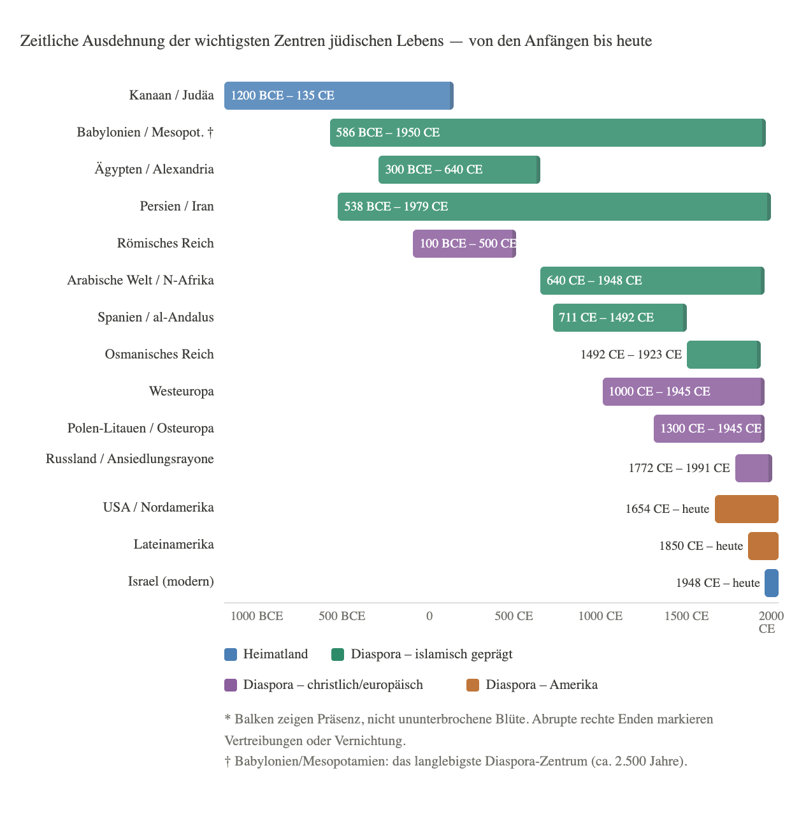

Die Stationen – jüdisches Leben von der Antike bis heute#
Ein Querschnittskapitel zur Geschichte des jüdischen Volkes
Wer die Geschichte des jüdischen Volkes als Ganzes betrachtet, erkennt ein Muster, das sich über dreitausend Jahre wiederholt: Ein Zentrum entsteht – oft durch Vertreibung aus einem anderen –, erlebt eine Phase des Aufbaus und der Blüte, gerät unter Druck und endet schließlich durch Katastrophe, Vertreibung oder langsamen Niedergang. Aber dieses Bild eines Staffellaufs ist irreführend: Die wichtigsten Zentren existierten über Jahrhunderte nebeneinander. Babylonien blühte zeitgleich mit Alexandria und Judäa, Spanien zeitgleich mit dem Rheinland. Treffender ist das Bild eines Netzwerks mit wechselnden Gravitationszentren: Die Ausweichbecken bestanden meist lange, bevor eine Katastrophe sie nötig machte.
Dieses Kapitel erzählt die Geschichte der wichtigsten Zentren jüdischen Lebens – von Kanaan bis zur Gegenwart. Es setzt voraus, was die anderen Kapitel im Detail ausgeführt haben, und zieht die Linien zusammen.
Eine Beobachtung vorweg, die die Graphik sichtbar macht: Von den dreitausend Jahren jüdischer Geschichte verlief der größere Teil in der Diaspora. Rechnet man grob, so umfasst die Periode physischer Präsenz im Land mit zumindest zeitweiser Eigenstaatlichkeit – von ca. 1200 BCE bis 135 CE, abzüglich des babylonischen Exils, plus das moderne Israel seit 1948 – etwa 1.400 Jahre; die Periode der dominanten Diaspora, von 135 CE bis 1948, etwa 1.800 Jahre. Kanaan/Judäa als Ursprungsland und das moderne Israel seit 1948 sind die einzigen Stationen mit staatlicher Souveränität. Alle anderen – Babylon, Alexandria, das Römische Reich, Spanien, Polen, Amerika – waren Existenz unter fremder Herrschaft, ohne eigene Souveränität (wobei Judäa selbst über weite Strecken unter Fremdherrschaft stand, aber eben im eigenen Land). Dass das jüdische Volk unter diesen Bedingungen nicht nur überlebte, sondern in vielen dieser Stationen kulturell blühte, gehört zu den auffälligsten Befunden dieser Geschichte.

1. Kanaan / Judäa (ca. 1200 BCE – 135 CE)#
Jüdische Richtung: Die Vorgeschichte der späteren Unterscheidungen – die Urgemeinschaft, aus der alle drei Strömungen hervorgehen.
Entstehung: Die Geschichte beginnt hier – im schmalen Landstreifen zwischen dem Jordan und dem Mittelmeer, in den judäischen Bergen und der Küstenebene. Wie genau die Israeliten in dieses Land kamen, ist historisch umstritten: Die Bibel erzählt vom Exodus aus Ägypten und der Landnahme; die Archäologie zeigt, dass die frühen Israeliten kulturell kaum von ihren kanaanäischen Nachbarn zu unterscheiden waren. Wahrscheinlich entstand das israelitische Volk durch einen komplexen Prozess aus eingewanderten Gruppen und ansässiger Bevölkerung, verbunden durch die gemeinsame Verehrung Jhwhs.
Blüte: Das Königreich unter David und Salomo (ca. 1000–920 BCE) – in seiner biblischen Pracht historisch schwer belegbar, aber als Gründungsnarration fundamental. Die Teilung in Nord- und Südreich, beide mit lebhafter religiöser und literarischer Kultur. Das Hasmonäerreich (140–63 BCE) brachte für knapp acht Jahrzehnte volle politische Unabhängigkeit. Die Periode des Zweiten Tempels (515 BCE – 70 CE) als intellektuelle Hoch-Zeit: Pharisäer und Sadduzäer, Zeloten und Essener, Schriftgelehrte und Apokalyptiker – eine der vielfältigsten religiösen Kulturen der Antike.
Ein wichtiger Einschnitt innerhalb dieser langen Periode: Die Perserzeit (ab 538 BCE) gilt in der Fachwelt als prägende Phase für das Judentum als „Religion des Buches“. Unter persischer und nachfolgender Herrschaft verfestigte sich die Tora als Mitte des religiösen Lebens (kanonisch fixiert wurde der Tanach freilich erst später, etwa bis 100 CE); das Lesen der Tora wurde zum Gottesdienst, und die synagogale Tradition verstetigte sich – zunächst parallel zum Tempelkult, nicht als dessen Ersatz. Diese Praxis kommt ohne Tempel und Land aus und machte die Diaspora erst lebbar.
Niedergang: Zweistufig. Erste Zerstörung: 586 BCE durch Nebukadnezar – Tempel zerstört, Elite deportiert. Rückkehr und Wiederaufbau. Zweite, definitive Zerstörung: 70 CE durch Titus. Nach dem Bar-Kochba-Aufstand (135 CE) folgten Massendeportationen und Verbote; eine erhebliche jüdische Bevölkerung blieb jedoch in Galiläa und teils in Judäa erhalten – von einer Totalvertreibung kann keine Rede sein. Hadrian benannte die Provinz in Syria Palaestina um – wohl als politische Demütigung (Palaestina, das Land der Philister); die genaue Motivlage ist in der Forschung umstritten. Der Name Judäa blieb in der jüdischen Tradition lebendig.
Warum es endete: Militärische Überlegenheit Roms – uneinholbar. Aber auch innere Zerrissenheit: Die jüdischen Fraktionen bekämpften einander während der Belagerung Jerusalems fast so erbittert wie die Römer.
Vermächtnis: Die Texte – Tora, Propheten, Schriften – und das rabbinische Judentum als tragbare Religion ohne Tempel und Land.
2. Babylonien / Mesopotamien (586 BCE – ca. 1950 CE)#
Jüdische Richtung: Orientalische Tradition; die babylonischen Juden bildeten den Kern der Mizrachim. (Sie übernahmen später teils sephardische Liturgien, sind aber ethnisch und historisch eine eigenständige Gruppe, die nie spanischen Boden sah.)
Das langlebigste Zentrum der Geschichte – zweieinhalbtausend Jahre, vom babylonischen Exil bis zur Massenauswanderung um 1950. Kaum eine andere Diaspora-Station ist so bedeutsam und wird im westlichen Bewusstsein so wenig wahrgenommen.
Entstehung: Erzwungen – die Deportation durch Nebukadnezar 586 BCE. Aber im Gegensatz zur assyrischen Deportation der Zehn Stämme – die spurlos in der umliegenden Bevölkerung aufgingen und nie zurückkehrten – wurden die Juden als Gemeinschaft angesiedelt, mit eigener Verwaltung, eigenen Lehrern, eigenen Texten. Gerade die Texte retteten sie: Als Volk des Buches konnten sie ihre Identität bewahren, ohne Land oder Tempel.
Blüte: Das Exil als paradoxe Geburtsstunde. In Babylon entstanden oder wurden kodifiziert weite Teile der Hebräischen Bibel. Nach der persischen Rückkehrerlaubnis (538 BCE) blieb ein erheblicher Teil der Gemeinschaft – freiwillig. Babylon blieb über Jahrhunderte wichtiger als Palästina selbst.
Der Höhepunkt: die großen Talmud-Akademien von Sura und Pumbedita (3.–7. Jahrhundert CE), die den Babylonischen Talmud schufen – das wichtigste Werk des rabbinischen Judentums, autoritativer als der Jerusalemer Talmud. Der Exilarch (Resh Galuta) wurde von den sassanidischen Persern als Repräsentant der Juden anerkannt – ein Vermittler zwischen Gemeinschaft und Behörden mit allerdings begrenzter realer Macht. Mesopotamien war das intellektuelle Zentrum der jüdischen Welt, während Westeuropa erst seine Gemeinden aufbaute.
Niedergang: Langsam und ohne dramatischen Bruch. Der Aufstieg des Islams veränderte die Lage – der Dhimmi-Status war erträglich, aber nicht gleichwertig. Die Akademien verloren ihre überragende Stellung ab dem 11. Jahrhundert, als Spanien und dann Polen an Bedeutung gewannen. Im 20. Jahrhundert lebten noch etwa 150.000 Juden im Irak. Nach der Staatsgründung Israels 1948 wuchs der Druck durch Pogrome und staatliche Diskriminierung. Die Operation Esra und Nehemia (1950/51) brachte rund 120.000 irakische Juden nach Israel; heute leben dort nur noch wenige Tausend – das Ende einer der größten Einzel-Migrationen der jüdischen Geschichte.
Was blieb: Der Babylonische Talmud – das Buch, nach dem die meisten Juden bis heute leben.
3. Ägypten / Alexandria (ca. 300 BCE – 640 CE)#
Jüdische Richtung: Hellenistisch geprägte Gemeinden; eine frühe Form jüdisch-griechischer Begegnung, die weder als sephardisch noch aschkenasisch klassifiziert werden kann – ein eigener Zweig, der keine direkte Nachfolgegemeinschaft hinterließ, dessen Elemente aber (etwa in den Romanioten) fortwirkten.
Entstehung: Nach Alexanders Eroberung Ägyptens und der Gründung Alexandrias (331 BCE) siedelten sich Juden in großer Zahl in der neuen Metropole an – angezogen von wirtschaftlichen Möglichkeiten und ptolemäischer Toleranz.
Blüte: Alexandria hatte im 1. Jahrhundert CE eine bedeutende jüdische Bevölkerung – die Schätzungen reichen von einigen Zehntausend bis zu 100.000–200.000 und sind sämtlich unsicher. Die Gemeinde war so groß und so griechisch geprägt, dass die Tora ins Griechische übersetzt wurde: die Septuaginta (3.–2. Jh. BCE), die griechische Bibel, die für das entstehende Christentum fundamental werden sollte. Der Philosoph Philo von Alexandria (ca. 20 BCE – 50 CE) las die Tora allegorisch und apologetisch im Licht der platonischen Philosophie – ein Werk, das auf das Christentum (etwa den Johannes-Prolog) mehr Wirkung hatte als auf das Judentum.
Niedergang: Abrupt und gewaltsam. 115–117 CE – während Trajans Partherfeldzug – brach in Alexandria und Kyrene ein jüdischer Aufstand aus, der brutal niedergeschlagen wurde. Die jüdische Gemeinschaft Alexandrias wurde nahezu vernichtet. Eine jüdische Präsenz in Ägypten bestand fort und verlor mit der arabischen Eroberung (640 CE) ihren Charakter als bedeutende Station.
4. Das Römische Reich (ca. 100 BCE – 500 CE)#
Jüdische Richtung: Gemischt – ein frühes Schmelztiegel-Judentum vor der späteren Aufspaltung.
Entstehung: Mit der römischen Expansion in den Osten kamen Juden als Händler, Sklaven, Freigelassene und freie Einwanderer in alle Teile des Reiches. Nach der Tempelzerstörung 70 CE beschleunigte sich die Verteilung.
Blüte: Die jüdische Bevölkerung des Reiches im 1. Jahrhundert CE ist Gegenstand stark umstrittener Schätzungen. Ältere Zahlen (Harnack) reichten bis 4–8 Millionen (5–7 % der Reichsbevölkerung); die neuere Forschung (etwa Seth Schwartz) hält eher 1–2 Millionen für plausibel. Rom selbst hatte eine bedeutende jüdische Gemeinde; in Kleinasien, Griechenland, Nordafrika, Spanien gab es Hunderte von Synagogengemeinden. Das Judentum galt als traditionsgemäß geduldeter Kult, teils mit Privilegien (Sabbatruhe, Befreiung vom Kaiserkult und von militärischen Pflichten) – eine Ausnahmestellung, die Ressentiments erzeugte, aber auch Stabilität gab.
Niedergang: Mit der Christianisierung des Reiches ab dem 4. Jahrhundert verschlechterte sich die Lage systematisch – steigende Einschränkungen unter christlichen Kaisern (Theodosius I.), Verbote gemischter Ehen, Ausschluss aus öffentlichen Ämtern. Das Weströmische Reich verschwand 476 CE; im Osten (Byzanz) wurden Juden zunehmend verfolgt.
Was blieb: Die Diaspora-Strukturen – Synagogen, Kehillot, rabbinisches Recht – die in diesem Rahmen erprobt wurden, bildeten das Modell für alle späteren Stationen.
5. Persien / Iran (538 BCE – heute)#
Jüdische Richtung: Orientalisch-persische Tradition, eigenständig, zu den Mizrachim zählend.
Das zweitälteste kontinuierliche Zentrum nach Babylonien – und im Westen kaum wahrgenommen.
Entstehung: Mit Kyros’ Edikt 538 BCE durften die babylonischen Juden zurückkehren – viele taten es nicht und blieben in Persien. Unter den Achämeniden, Parthern und Sassaniden lebten Juden unter wechselnden Bedingungen, meist toleriert.
Blüte: Mehrere Hochphasen – besonders unter den Sassaniden (3.–7. Jh. CE), die die Talmud-Akademien förderten. Im mittelalterlichen islamischen Persien lebten Juden als Dhimmi mit relativer Stabilität.
Niedergang: Schrittweise nach der Islamischen Revolution 1979. Die jüdische Bevölkerung, die vor 1979 etwa 80.000 umfasste, schrumpfte durch Auswanderung auf heute geschätzte 8.000–25.000.
Besonderheit: Der Iran ist eine der wenigen Stationen der Region mit einer fortbestehenden jüdischen Gemeinschaft – neben kleineren in der Türkei und in Marokko. Bemerkenswert ist der Widerspruch zwischen den wiederholt geäußerten Eliminationsdrohungen der Staatsführung gegen Israel und der gleichzeitigen Duldung der eigenen jüdischen Gemeinde – ein Paradox der iranischen Politik.
6. Arabische Welt und Nordafrika (7. Jh. – 20. Jh.)#
Jüdische Richtung: Überwiegend mizrachisch und sephardisch – Gemeinschaften, die seit der Antike in der Region lebten, ergänzt durch Sephardim nach 1492.
Entstehung: Mit der islamischen Expansion ab 632 CE kamen weite Teile der jüdischen Diaspora unter islamische Herrschaft – Palästina, Syrien, Ägypten, Nordafrika, Persien, Spanien. Der Dhimmi-Status – Religionsfreiheit gegen Sondersteuer und Einschränkungen – schuf einen rechtlichen Rahmen, der trotz Ungleichheit oft besser war als die zeitgleiche Situation in christlichen Ländern.
Blüte: Das Goldene Zeitalter im islamischen Raum (9.–11. Jh.) – in Cordoba, Kairo, Bagdad, Fes. Jüdische Ärzte, Philosophen, Dichter, Händler spielten eine Rolle in islamischen Gesellschaften, die ihnen in christlichen Ländern meist verschlossen blieb. Toleranz war dabei pragmatisch – Juden waren als Händler, Ärzte und Steuerzahler nützlich – und keineswegs lückenlos: Das Massaker von Granada 1066 zeigt, dass auch unter muslimischer Herrschaft Pogrome vorkamen.
Niedergang: Schrittweise Verschlechterung unter fanatischeren islamischen Herrschern (Almohaden, ab 1146 – Konversion oder Vertreibung). Endgültiger Einbruch nach 1948: Die Gründung Israels löste in arabischen Ländern Pogrome und staatliche Diskriminierung aus. Zwischen 1948 und den 1970ern verließen je nach Zählweise etwa 800.000 bis 1.000.000 Juden die arabischen Länder und Nordafrika – nach Israel, Frankreich, Amerika. Uralte Gemeinden in Irak, Jemen, Libyen, Tunesien, Marokko, Ägypten wurden innerhalb einer Generation aufgelöst.
7. Spanien / al-Andalus (711 – 1492)#
Jüdische Richtung: Die Geburtsstunde der Sephardim als eigenständige Gemeinschaft – der Name leitet sich von Sepharad ab, dem hebräischen Namen für Spanien.
Ein Diaspora-Zentrum von besonderem intellektuellem Gewicht – und mit einem der abruptesten Niedergänge.
Entstehung: Mit der islamischen Eroberung der iberischen Halbinsel 711 CE. Juden, die unter westgotischer Herrschaft verfolgt worden waren, begrüßten teils die neuen Herrscher.
Blüte: Das Goldene Zeitalter – regional begrenzt auf Córdoba, Toledo, Granada und zeitlich vor allem das 10.–12. Jahrhundert. Jüdische Gelehrte schrieben auf Arabisch über jüdische Themen; Maimonides verband jüdische Theologie mit aristotelischer Philosophie. Hasdai ibn Schaprut als Wesir, Shmuel HaNagid als Feldherr – Juden in höchsten Staatsämtern eines islamischen Königreichs. Das Toledo der Übersetzer im 12. Jahrhundert machte griechische Wissenschaft durch arabisch-hebräisch-lateinische Übersetzungsarbeit dem christlichen Europa zugänglich. Die Blüte war nicht ungetrübt: Juden blieben Dhimmi, und mit den Almohaden (ab 1146) begann eine harte Verfolgung – Maimonides selbst floh 1165 nach Ägypten und wurde dort Leibarzt am Hof Saladins.
Niedergang: Die Reconquista brachte schrittweise Verschlechterung. 1391 – Pogromwellen in Sevilla, Valencia, Barcelona. Zehntausende Zwangsgetaufte (Conversos). 1478 – die Inquisition, gerichtet gegen Conversos, die heimlich jüdisch geblieben waren. 1492 – das Edikt von Alhambra: Alle nicht konvertierenden Juden müssen Spanien verlassen.
Was blieb: Die Sephardim – mit ihrer Sprache Ladino, ihren Melodien, ihrer Kultur – zerstreuten sich über das Osmanische Reich, Nordafrika, die Niederlande, später Amerika. Und das intellektuelle Erbe: Maimonides, Ibn Gabirol, Halevi – Werke, die das jüdische Denken bis heute prägen.
8. Osmanisches Reich (1492 – ca. 1923)#
Jüdische Richtung: Überwiegend Sephardim – das große Auffangbecken nach der Vertreibung aus Spanien. Daneben ältere orientalische Gemeinden (Romanioten, Mizrachim).
Entstehung: Das Osmanische Reich war das große Auffangbecken nach 1492. Sultan Bayezid II. ließ Schiffe schicken, um die vertriebenen Sephardim aufzunehmen.
Blüte: Thessaloniki wurde zu einer der wenigen Städte Europas mit jüdischer Bevölkerungsmehrheit – im 16. Jahrhundert nahe der Hälfte, später rückläufig (um 1900 etwa ein Drittel), in einer durchweg multikonfessionellen Stadt (Juden, Muslime, Christen). Dreißig Synagogen, jüdische Hafenarbeiter, Ladino als verbreitete Stadtsprache. Konstantinopel, Izmir, Safed, Kairo – überall bedeutende Gemeinden. Der Dhimmi-Status war erträglich; einzelne Juden stiegen zu hohen Staatsämtern auf. Safed in Galiläa wurde im 16. Jahrhundert Zentrum der Kabbala und der Rechtskodifikation – Joseph Karos Schulchan Aruch entstand dort –, verlor aber nach 1570 rasch an Bedeutung.
Niedergang: Mit dem Zerfall des Osmanischen Reichs im 19. und frühen 20. Jahrhundert. Nationalismus – türkischer, griechischer, arabischer – verdrängte die multi-ethnische osmanische Ordnung. Der Erste Weltkrieg, der Bevölkerungsaustausch zwischen Griechenland und der Türkei, schließlich der Holocaust, der Thessaloniki nahezu auslöschte.
Was blieb: Die türkischen Juden – heute ca. 15.000 in Istanbul – eine der letzten sephardischen Gemeinden des Nahen Ostens.
9. Westeuropa (ca. 1000 – 1945)#
Jüdische Richtung: Die Geburtsstunde der Aschkenasim – des mittel- und osteuropäischen Judentums. Der Begriff leitet sich von Aschkenas ab, dem hebräischen Namen für das Rheinland.
Entstehung: Juden lebten seit der Römerzeit in Westeuropa – in kleinen Gemeinden am Rhein, in Frankreich, in England. Das Frühmittelalter war relativ tolerant; karolingische Könige schätzten jüdische Händler als Brücke zwischen christlicher und islamischer Welt.
Blüte: Die SchUM-Städte am Rhein (Speyer, Worms, Mainz) als geistige Zentren. Raschi – der bedeutendste Talmud-Kommentator des Mittelalters – wirkte in Troyes in der Champagne. Im 17.–18. Jahrhundert: Amsterdam als „Jerusalem des Nordens“, Spinoza, die Hofjuden der deutschen Fürstenhöfe. Im 19. Jahrhundert: Emanzipation, jüdische Teilhabe an Wissenschaft, Kunst, Wirtschaft, Politik – Heine, Marx, Mahler, Freud, Einstein.
Niedergang: Die Kreuzzugsmassaker (1096) als erste große Zäsur. Ritualmordlegenden, Pestanklagen, Vertreibungen. England 1290, Frankreich mehrfach, deutsche Städte immer wieder. Dann die scheinbare Lösung – Emanzipation im 19. Jahrhundert – und gleichzeitig der neue rassistische Antisemitismus. Der Holocaust 1933–1945 vernichtete zwei Drittel der europäischen Juden – knapp sechs Millionen Menschen – und beendete das westeuropäische Zentrum als demographische Realität.
Was blieb: Kleine Gemeinschaften in Frankreich, Großbritannien, Deutschland. Die Erinnerung – in Yad Vashem, in Gedenkstätten, in Archiven. Und das Erbe: die kulturellen und intellektuellen Beiträge, die die europäische Moderne unauflöslich prägten.
10. Polen-Litauen und Osteuropa (ca. 1300 – 1945)#
Jüdische Richtung: Das Herzland der Aschkenasim – das größte und prägendste Zentrum aschkenasischer Kultur, Sprache (Jiddisch) und Religiosität.
Das demographisch größte Zentrum der Neuzeit – und das mit der weitreichendsten Vernichtung.
Entstehung: Juden wanderten nach Osten, als Westeuropa sie immer wieder vertrieb. Polnische Könige luden sie ein – als Händler, Handwerker, Finanziers. Kasimir der Große gab ihnen weitgehende Privilegien.
Blüte: Im 16.–17. Jahrhundert das größte jüdische Zentrum der Welt. Der Vaad Arba Aratzot – Rat der Vier Länder – als jüdisches Selbstverwaltungsgremium mit weitreichender Autonomie in Steuer-, Bildungs- und Rechtsfragen, in dieser Ausprägung in der Diaspora einzigartig. Große Talmud-Akademien in Krakau, Lublin, Vilna („das Jerusalem Litauens“). Das Schtetl als Lebensform – arm, fromm, kulturell reich. Jiddisch als vollständige Literatursprache. Der Chassidismus als religiöse Erneuerungsbewegung des 18. Jahrhunderts.
Niedergang: Die Chmelnizkij-Massaker 1648/49 als erste große Katastrophe – nach revidierten Schätzungen einige Zehntausend jüdische Opfer (ältere Chroniken nannten weit höhere Zahlen). Polens politischer Zerfall, russische Herrschaft, die Ansiedlungsrayone. Pogromwellen. Massenemigration nach Amerika (1880–1924). Was blieb – ca. 3,3 Millionen Juden in Polen 1939 –, wurde im Holocaust nahezu vollständig ermordet. Die deutschen Vernichtungslager im besetzten Polen – Auschwitz, Treblinka, Sobibor, Belzec, Majdanek – lagen mitten im größten jüdischen Siedlungsgebiet der Welt.
Was blieb: Nahezu nichts – demographisch. Kulturell: das jiddische Kulturerbe (Literatur, Theater, Film, Musik), das heute mühsam wiederentdeckt wird. Und Millionen jüdischer Familien in Israel und Amerika, deren Wurzeln in den polnischen Schtetlach liegen.
11. Russland und die Ansiedlungsrayone (ca. 1791 – 1991)#
Jüdische Richtung: Aschkenasim – die östlichste und größte aschkenasische Gemeinschaft, geprägt von Armut, rabbinischer Gelehrsamkeit und wachsender politischer Radikalisierung.
Entstehung: Russland wurde durch die Teilungen Polens (1772, 1793, 1795) ungewollt zur Heimat der größten jüdischen Bevölkerung der Welt. Die Zaren hatten kein Interesse an jüdischen Untertanen – und schufen ab 1791 die Ansiedlungsrayone: ein festgelegtes Territorium im Westen des Reiches, aus dem Juden grundsätzlich nicht ausreisen durften (mit Ausnahmen für Handel und Studium).
Blüte: Relativ wenig echte Blüte – eher Überleben unter schwierigen Bedingungen. Aber: der Druck erzeugte eine kulturelle Kernschmelze außerordentlicher Intensität. Aus den Ansiedlungsrayonen gingen fast alle modernen jüdischen Bewegungen hervor: der Chassidismus, die Haskala (jüdische Aufklärung), der Bundismus (jüdischer Sozialismus), die moderne hebräische Literatur und – entscheidend – der Zionismus als Massenbewegung. Herzl stammte aus Budapest und wirkte in Wien, aber die ersten Aliyas nach Palästina kamen überwiegend aus Russland. Es war der Druck der Pogrome, der die Bewegung von einer intellektuellen Idee zur gelebten Praxis machte.
Niedergang: Pogromwellen nach 1881, nach 1903 (Kischinew), nach 1919. Massenemigration nach Amerika. Die Russische Revolution 1917 brachte kurzfristig Hoffnung – formale Gleichstellung. In den 1920er und 1930er Jahren wurde Jiddisch als Sprache des „jüdischen Proletariats“ sogar staatlich gefördert (Schulen, Zeitungen, Theater, eigene Gerichte), während Hebräisch als Sprache von Religion und Zionismus verboten war. Das gescheiterte Experiment der Jüdischen Autonomen Oblast Birobidschan (ab 1934) gehört in diesen Zusammenhang. Erst der späte stalinistische Antisemitismus (ab 1948) zerschlug die jiddischen Kulturinstitutionen. So lebten die sowjetischen Juden zuletzt in erzwungener Assimilation – jiddische Institutionen liquidiert, Hebräisch kriminalisiert, die meisten Synagogen geschlossen, ohne Auswanderungsmöglichkeit.
Ende: Mit dem Zerfall der Sowjetunion (1991) wanderten ca. eine Million sowjetische Juden aus – nach Israel (die große Einwanderungswelle der 1990er), nach Amerika, nach Deutschland. Die jüdische Gemeinschaft Russlands ist heute ein Bruchteil ihrer früheren Größe.
12. USA / Nordamerika (1654 – heute)#
Jüdische Richtung: Zunächst sephardisch (Gründungsgeneration), dann deutsch-jüdisch (1820–1880), schließlich überwältigend aschkenasisch-osteuropäisch (Masseneinwanderung 1881–1924). Heute alle Strömungen vertreten, von ultra-orthodox bis Reform.
Das strukturell einzigartige Zentrum – das einzige, das bisher nicht durch Katastrophe endete.
Entstehung: 1654 landeten 23 sephardische Juden in New Amsterdam (dem späteren New York) – vertrieben aus Brasilien, das von Portugal zurückerobert worden war. Die niederländische Kolonialverwaltung wollte sie nicht; Peter Stuyvesant schrieb bösartige Briefe nach Amsterdam. Die Amsterdamer Handelskompanie bestand auf ihrer Aufnahme. Ein unspektakulärer Anfang für das, was das größte jüdische Zentrum der Geschichte werden sollte.
Blüte: Mehrere Phasen. Die sephardische Gründungsgeneration – Händler in Newport, Charleston, New York. Die deutsch-jüdische Einwanderung 1820–1880 – Kaufleute, Reformjudentum, der Aufstieg ins Bürgertum. Die große osteuropäische Einwanderung 1881–1924 – rund zwei Millionen Menschen, konzentriert in der Lower East Side von Manhattan, mit jiddischsprachigen Zeitungen, Theatern, Gewerkschaftsbewegungen. Die folgenden Generationen amerikanisierten sich vollständig, in Universitäten, Wissenschaft, Kultur, Wirtschaft.
Heute: Ca. 7–7,5 Millionen amerikanische Juden – die größte jüdische Gemeinschaft der Welt außerhalb Israels, darunter ein wachsender ultra-orthodoxer Anteil. Kulturell einflussreich weit über ihre demographische Größe (ca. 2 % der Bevölkerung) hinaus. Politisch divers – von ultra-orthodox bis säkular-links.
Besonderheit: Amerika hat keine staatliche Verfolgung von Juden gekannt. Die Verfassung verbietet religiöse Tests für öffentliche Ämter – von Anfang an. Antisemitismus existiert, aber nie als Staatsideologie. Anders als in Europa gab es keine staatlich erzwungene Assimilation – soziale Kosten (Namensänderungen, Konversionen, hohe Mischehenraten) blieben gleichwohl. Das macht Amerika strukturell anders als alle europäischen Zentren.
Offene Frage: Ist Amerika die endgültige Ausnahme – oder wiederholt sich das Muster irgendwann? Die wachsende politische Polarisierung, Antisemitismus von links wie rechts, das Unbehagen nach dem 7. Oktober 2023 – manche amerikanische Juden stellen diese Frage zum ersten Mal ernsthaft.
13. Lateinamerika (19. Jh. – heute)#
Jüdische Richtung: Gemischt – sephardische Conversos (Kolonialzeit), aschkenasische Einwanderer (19./20. Jh.), Holocaust-Flüchtlinge.
Entstehung: Drei Einwanderungswellen: sephardische Conversos zur Kolonialzeit (oft noch als heimliche Juden), osteuropäische Einwanderer Ende des 19./Anfang des 20. Jahrhunderts, Holocaust-Flüchtlinge in den 1930er/40ern.
Blüte: Argentinien wurde das wichtigste südamerikanische Zentrum – Buenos Aires hatte in den 1930ern–50ern eine jüdische Gemeinde von einigen Hunderttausend, mit eigenen Zeitungen, Theatern, Schulen, politischen Bewegungen. Auch in Brasilien, Uruguay, Chile, Mexiko bedeutende Gemeinden.
Heute: Deutlich geschrumpft durch Auswanderung nach Israel und in die USA, durch wirtschaftliche Instabilität, durch gelegentliche antisemitische Ausschreitungen (der Bombenanschlag auf das jüdische Gemeindezentrum AMIA in Buenos Aires 1994 – 85 Tote – blieb ungesühnt). Noch ca. 170.000–200.000 Juden in Argentinien, ca. 100.000–120.000 in Brasilien.
14. Israel (1948 – heute)#
Jüdische Richtung: Alle – Aschkenasim, Sephardim, Mizrachim, äthiopische Juden (Beta Israel), Jemeniten, sowjetische Juden. Das erste Zentrum, das versucht, alle Strömungen unter einem Dach zu vereinen. Die Spannungen zwischen diesen Gemeinschaften sind ein zentrales Thema der israelischen Innenpolitik (→ Kapitel 6).
Das erste Zentrum mit staatlicher Souveränität seit der Antike – die letzte jüdische Eigenstaatlichkeit endete mit der römischen Annexion (63 BCE / Provinz ab 6 CE), kurz wiederbelebt im Bar-Kochba-Aufstand (132–135 CE). Israel ist zugleich das erste Zentrum, das von Anfang an unter existenziellem militärischem Druck stand.
Entstehung: Aus der zionistischen Bewegung, den Aliyas, dem Holocaust und dem britischen Mandatsende. Staatsgründung 14. Mai 1948 – und sofortiger Angriff der arabischen Nachbarstaaten. Für die palästinensische Bevölkerung bedeutete dieselbe Gründung Flucht und Vertreibung – die Nakba („Katastrophe“).
Blüte: In sieben Jahrzehnten von einem armen, bedrängten Kleinstaat zu einer hochentwickelten Wirtschaft, einer Technologiemacht, einer Nuklearmacht (inoffiziell), einer der stärksten Armeen der Welt. Die Wiederbelebung des Hebräischen als Alltagssprache. Masseneinwanderung aus aller Welt – ein einzigartiges Experiment der Zusammenführung zerstreuter Diaspora-Gemeinschaften. Die große Einwanderungswelle aus der UdSSR der 1990er (rund eine Million) umfasste viele, die nach halachischem Recht nicht als jüdisch galten – eine Quelle anhaltender Spannungen mit dem Rabbinat.
Heute: Ca. 7 Millionen jüdische Israelis – erstmals seit der Antike die größte jüdische Gemeinschaft der Welt. Zugleich: tiefe innere Spaltungen (säkular/religiös, aschkenasisch/mizrachisch), ein ungelöster Konflikt mit der palästinensischen Bevölkerung (Besatzung seit 1967), und eine geopolitische Lage, die nach dem 7. Oktober 2023 neue Dimensionen angenommen hat. Auch innerjüdisch ist der Zionismus nie unumstritten geblieben – von religiösen Antizionisten bis zu Stimmen wie Hannah Arendt.
Offene Frage: Ist Israel der letzte Halt – die Station, die endlich nicht durch Katastrophe endet? Oder ist es, wie alle anderen, ein historisch kontingentes Gebilde? Die Geschichte gibt keine Garantien.
Exkurs: Die Frucht der Stationen – jüdische Nobelpreisträger#
Bevor der Schluss die Bilanz zieht, lohnt ein Blick auf eine merkwürdige Statistik, die viel über das Muster der Stationen sagt – und die im Eingangskapitel als eines der Leit-Rätsel dieses Projekts benannt wurde.
Die Zahlen#
Seit der Stiftung der Nobelpreise 1901 bis heute (Stand 2025) wurden insgesamt rund 965 Menschen mit einem Nobelpreis ausgezeichnet – in den Kategorien Physik, Chemie, Medizin, Literatur, Frieden und (seit 1969) Wirtschaftswissenschaften.
Die Zählung jüdischer Preisträger hängt von der Definition ab. Zählt man alle mit mindestens einem jüdischen Elternteil, kommt man auf etwa 220; beschränkt man sich auf halachisch Jüdische, sind es eher rund 180. Die folgenden Zahlen verwenden die weite Definition und beruhen auf den gängigen zusammenfassenden Listen (etwa nach den Angaben von jinfo.org), die definitionsabhängig und damit mit Vorsicht zu lesen sind. In dieser Zählung entsprechen 220 von 965 rund 22 Prozent aller Preisträger.
Der Vergleich zur Bevölkerung ergibt eine der auffälligsten statistischen Anomalien der Moderne. Juden machen heute etwa 0,2 Prozent der Weltbevölkerung aus – rund 15 Millionen Menschen unter 8 Milliarden. Ihr Anteil an Nobelpreisträgern ist also rund hundertmal höher als ihr Anteil an der Weltbevölkerung. Bei proportionaler Verteilung wären ungefähr zwei jüdische Preisträger zu erwarten gewesen. Es sind, je nach Zählung, 180 bis 220.
Die Verteilung nach Kategorien zeigt, wo der Überhang besonders ausgeprägt ist (Größenordnungen, definitionssensibel):
Kategorie |
Anteil jüdischer Preisträger |
|---|---|
Wirtschaftswissenschaften |
ca. 40 % |
Medizin |
ca. 27 % |
Physik |
ca. 25 % |
Chemie |
ca. 19 % |
Literatur |
ca. 13 % |
Frieden |
ca. 10 % |
Der Überhang ist in den mathematisch-analytischen Disziplinen am stärksten, in den kulturellen und politischen Feldern geringer – aber in jeder Kategorie ein Vielfaches des Bevölkerungsanteils.
Vier strukturelle Faktoren#
Die Zahlen verlangen nach Erklärung. Vier Faktoren wirken zusammen – jeder von ihnen verweist auf eines der zentralen Themen dieses Projekts.
Erstens: Die Emanzipation. Die Zahlen wären ohne die europäische Emanzipation des 19. Jahrhunderts nicht möglich gewesen (→ Kapitel 3). Jahrhundertelang waren Juden vom Universitätsstudium und den meisten akademischen Berufen ausgeschlossen. Als diese Schranken im 19. Jahrhundert fielen – in Frankreich 1791, in Österreich-Ungarn 1867, in Deutschland 1871 –, traf offene Wissenschaft auf eine Bevölkerung, die durch eine lange Textkultur (hohe Alphabetisierung schon seit dem 16. Jahrhundert, Berufsverbote, die in intellektuelle Berufe drängten) auf geistige Arbeit vorbereitet war. Das Ergebnis war innerhalb einer Generation sichtbar. Frühe jüdische Nobelpreisträger – Paul Ehrlich (Medizin 1908), Albert Einstein (Physik 1921), Niels Bohr (Physik 1922), Fritz Haber (Chemie 1918), Richard Willstätter (Chemie 1915) – waren Produkte genau dieser Öffnung.
Zweitens: Die Vertreibung. Die Zahlen wären ohne den Holocaust nicht in ihrer heutigen Form zustande gekommen (→ Kapitel 4). Die Flucht der jüdischen Wissenschaftler aus Nazi-Deutschland und Mitteleuropa nach 1933 – Einstein, Hans Bethe, Eugene Wigner, Otto Stern, Max Born, John von Neumann, Leó Szilárd, Edward Teller und viele andere – verschob das wissenschaftliche Schwergewicht der Welt von Europa nach Amerika. Es gehört zu den Ironien der Geschichte, dass Hitler jene Menschen aus Europa trieb, deren wissenschaftliche Arbeit in Amerika das Kriegsgerät mitentwickelte, das Deutschland besiegte. Das Manhattan-Projekt wurde maßgeblich von Emigranten mitgeprägt – neben einer großen Zahl US-geborener Wissenschaftler.
Drittens: Die Konzentration in den Ausnahme-Stationen. Die geografische Verteilung der jüdischen Nobelpreisträger entspricht genau dem Muster, das dieses Kapitel durchzieht: Die überwiegende Mehrheit – etwa 140 der 220 – ist mit den USA verbunden (Station 12). Israel (Station 14) stellt inzwischen ebenfalls eine zweistellige Zahl. Die übrigen verteilen sich auf das Europa vor 1939 (Deutschland, Österreich-Ungarn, Frankreich), auf das Vereinigte Königreich, auf die ehemalige Sowjetunion. Das ist keine Zufallsverteilung – es ist die Landkarte der Stationen, die nicht in Katastrophen endeten oder in denen die Juden überhaupt Zugang zur höheren Bildung hatten.
Viertens: Urbanisierung und Netzwerke. Nach der Emanzipation waren jüdische Familien überproportional in den urbanen Zentren (Wien, Berlin, New York) und im gehobenen Bürgertum vertreten – genau dem Milieu mit der höchsten Bildungsdichte und dem besten Zugang zur Spitzenforschung. Hinzu kamen wissenschaftliche Netzwerke und Pfadabhängigkeiten: Etablierte förderten Nachwuchs, Schulen bildeten sich (Einstein, Wigner, Teller bewegten sich in überlappenden Kreisen). Solche soziologischen Mechanismen erklären den Effekt ohne jeden Rückgriff auf Essentialismus – die Bene-Israel-Juden Indiens etwa waren emanzipiert und nicht vertrieben, lebten aber fern dieser Zentren und Netzwerke, und kommen bei den Nobelpreisträgern nicht vor.
Einige Namen#
Statt einer systematischen Aufzählung – die den Rahmen sprengen würde – genügt ein Blick auf einige Laufbahnen, die das Muster sichtbar machen.
Albert Einstein (1879 Ulm – 1955 Princeton): Nobelpreis für Physik 1921, bereits vor seiner Emigration weltberühmt, floh 1933 aus Deutschland nach Princeton. Sein berühmter Brief an Roosevelt (1939) wurde zum Auslöser des Manhattan-Projekts.
Niels Bohr (1885 Kopenhagen – 1962 Kopenhagen): Nobelpreis für Physik 1922, Sohn einer jüdischen Mutter. Floh 1943 mit einem Fischerboot aus Dänemark nach Schweden, dann per Flugzeug nach England. Sein Sohn Aage Bohr erhielt 1975 ebenfalls den Physik-Nobelpreis.
Hans Bethe (1906 Straßburg – 2005 Ithaca): Nobelpreis für Physik 1967, für die Aufklärung der Kernprozesse, die Sterne leuchten lassen. 1933 aus Deutschland entlassen, über England nach Cornell, entscheidend am Manhattan-Projekt beteiligt.
Elie Wiesel (1928 Sighet – 2016 New York): Friedensnobelpreis 1986, als Holocaust-Überlebender und Zeuge. Sein Buch La Nuit (Die Nacht) wurde zu einem der meistgelesenen Zeugnisse des Holocaust.
Imre Kertész (1929 Budapest – 2016 Budapest): Literatur-Nobelpreis 2002, ebenfalls Holocaust-Überlebender. Sein Roman eines Schicksallosen über die Auschwitz-Erfahrung als jugendlicher Häftling.
Shimon Peres (1923 Wiszniewo – 2016 Tel Aviv) und Yitzhak Rabin (1922 Jerusalem – 1995 Tel Aviv): Friedensnobelpreis 1994 gemeinsam mit Jassir Arafat, für die Oslo-Verträge (→ Kapitel 8). Peres wurde in Polen geboren, emigrierte als Kind nach Palästina; Rabin war gebürtiger Jerusalemer, wurde 1995 von einem jüdischen Rechtsextremisten ermordet.
Daniel Kahneman (1934 Tel Aviv – 2024 New York): Wirtschafts-Nobelpreis 2002, für die Verhaltensökonomik. In Paris aufgewachsen, überlebte dort die deutsche Besatzung, wanderte nach Palästina aus, wurde amerikanischer Staatsbürger. Seine Biographie ist paradigmatisch: Europa, Flucht, Israel, Amerika – vier Stationen in einem Leben.
Was die Zahlen sagen – und was nicht#
Die Überrepräsentation jüdischer Nobelpreisträger ist eine Tatsache, aber keine Selbstverständlichkeit. Sie verlangt historische Erklärung, ohne dass sie metaphysische Deutungen rechtfertigt.
Was die Zahlen sagen: Dass eine jahrhundertelang ausgeschlossene Gemeinschaft mit einer ausgeprägten Bildungstradition, der plötzlich der Zugang zu Universitäten und Forschungsinstitutionen geöffnet wurde, ihre aufgestaute intellektuelle Energie in die neuen Felder investierte. Dass die Vertreibung dieser Menschen aus Europa zu einer der größten Wissenstransferbewegungen der Geschichte wurde. Dass die Konzentration in den USA und in Israel – den beiden Ausnahme-Stationen dieses Kapitels – die Exzellenz zusätzlich bündelte.
Was die Zahlen nicht sagen: Dass es eine biologische Grundlage für intellektuelle Leistung gibt. Pseudowissenschaftliche Versuche, die Überrepräsentation mit jüdischer Genetik zu erklären, sind empirisch unhaltbar – aschkenasische, sephardische und mizrachische Juden sind genetisch nicht einheitlich – und übernehmen die Denkstruktur des Rassenantisemitismus mit umgekehrtem Vorzeichen. Auch dass jüdisches Genie ein göttliches Geschenk sei – eine Lesart, die in frommen Kreisen kursiert –, ist weder belegbar noch widerlegbar, jedenfalls nicht historisch.
Die Zahlen sagen vor allem eines: Sie sind Folge der Stationen, nicht ihrer Ursache. Emanzipation, Vertreibung, Konzentration, urbane Netzwerke – das sind die Bewegungen, die dieses Kapitel beschreibt. Die Nobelpreise sind ihr unerwartetes Nebenprodukt.
Ein bitterer Gedanke#
Die Zahlen haben eine Kehrseite, die selten mitgedacht wird: Was der Holocaust an Potenzial zerstört hat.
Knapp sechs Millionen Juden wurden ermordet, die überwältigende Mehrheit davon Osteuropäer – Polen, Ukrainer, Litauer, Russen, Ungarn, Rumänen. Darunter waren die Kinder und Enkel derjenigen, die unter anderen Bedingungen vielleicht in Warschau, Lemberg, Wilna, Czernowitz die gleichen intellektuellen Laufbahnen eingeschlagen hätten wie ihre Vettern, die rechtzeitig flohen. Das polnisch-jüdische Judentum der 1930er Jahre war die weltweit größte jüdische Gemeinschaft mit einer tiefen Bildungstradition – Wilna wurde „Jerusalem des Nordens“ genannt, nicht zufällig. Diese gesamte Welt wurde ausgelöscht.
Wer weiß, wie viele weitere Nobelpreisträger es gegeben hätte, wäre das osteuropäische Judentum nicht vernichtet worden. Die Zahlen, die wir heute zählen, könnten die Hälfte derer sein, die es hätte geben können – oder weniger. Das ist keine sentimentale Spekulation, sondern eine ernsthafte historische Überlegung. Die Zahlen sind Monument der Emanzipation und gleichzeitig Mahnmal der Vernichtung.
Mit diesem Exkurs werden die Nobelpreise nicht zum Triumphlied. Sie sind ein Nebenprodukt der Geschichte, die dieses Kapitel erzählt – einer Geschichte, die nicht in Zahlen aufgeht. Hinter jeder dieser Biographien steht eine Familiengeschichte, die durch Stationen führt: Vertreibung, Flucht, Ankunft, manchmal wieder Vertreibung. Die Zahlen sind der statistische Schatten der Stationen, nicht ihre Krönung.
Der Schluss zieht nun die Bilanz der Stationen selbst.
Schluss: Das Muster und seine Ausnahmen#
Die Übersicht zeigt drei wiederkehrende Elemente in nahezu jeder Station:
Der Anfang ist oft erzwungen – Vertreibung, Not, Flucht. Selten zieht eine Gemeinschaft freiwillig und planmäßig um. Die Sephardim kamen 1492 nach Konstantinopel, weil sie keine Wahl hatten. Die Osteuropäer kamen 1881–1924 nach New York, weil die Pogrome sie trieben. Erzwungene Anfänge erzeugen manchmal die stärksten Stationen.
Die Blüte kommt rasch – weil mobile Gemeinschaften mit Kapital, Bildung und Netzwerken ankommen, und weil sie auf städtische Infrastruktur (Handel, Druck, Schulen) und auf die Freiheit zu wirtschaftlicher und geistiger Tätigkeit treffen. Sephardim in Thessaloniki, Aschkenasim in New York, sowjetische Juden in Israel – alle bauten in einer Generation auf, was andere in Generationen nicht erreichten.
Das Ende kommt meist von außen – durch politischen Wandel, Herrscherwechsel, Nationalismus, Fanatismus. Aber nicht ausschließlich: Innere Faktoren spielten mit – die Fraktionskämpfe im belagerten Jerusalem, die Spaltung durch die Conversos in Spanien, die soziale Reibung um jüdische Geldverleiher in Polen. Das Überleben gelang nicht allein trotz der Katastrophen, sondern wesentlich wegen der hohen sozialen und intellektuellen Anpassungsfähigkeit in den Zeiten dazwischen. Das Muster folgt dem vieler Diaspora-Gemeinschaften: Blüte unter relativer Toleranz, Niedergang bei Repression – kein spezifisch jüdisches Schicksal.
Die Ausnahme ist Amerika – bisher. Und Israel – das keine Minderheit mehr ist, sondern ein Staat. Ob diese Ausnahmen dauerhaft sind, kann nur die Geschichte beantworten.
Was konstant blieb durch alle Stationen: dieselbe Tora, derselbe Sabbat, dieselbe Erinnerung an den Exodus, dasselbe Gebet am Ende des Pessach-Seders. „Nächstes Jahr in Jerusalem“ – gesprochen in Babylon, in Cordoba, in Krakau, in New York. Das ist die eigentliche Kontinuität: nicht das Territorium, nicht die Sprache, nicht der Staat – sondern der Text und die Erinnerung.
Zur Vertiefung der einzelnen Stationen sei auf die anderen Kapitel dieser Reihe verwiesen. Dieses Kapitel konzentriert sich auf die großen Zentren; ältere und kleinere Gemeinschaften – die Cochin- und Bene-Israel-Juden Indiens, die Kaifeng-Juden Chinas, die Beta Israel Äthiopiens – verdienten je eine eigene Darstellung. Zur demographischen Entwicklung (Schätzungen u. a. nach Salo W. Baron [Baron, 1952]): Die jüdische Weltbevölkerung sank von mutmaßlich 1–4 Millionen im 1. Jahrhundert CE auf 1–1,5 Millionen um 1500 und wuchs erst im 19./20. Jahrhundert wieder auf 16–18 Millionen – bevor der Holocaust sie um etwa ein Drittel reduzierte (nach Yad Vashem rund 5,7–6 Millionen Ermordete). Heute: ca. 15–16 Millionen.